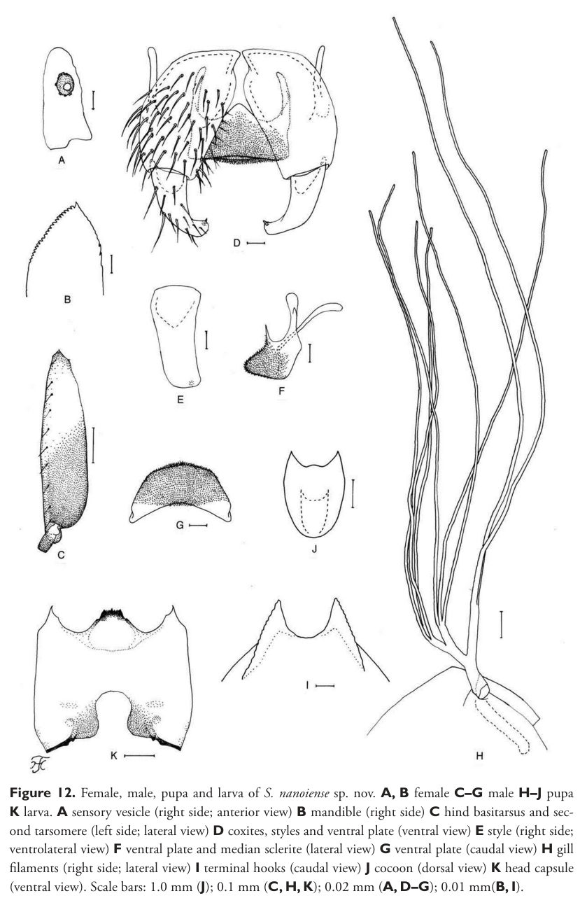

Species › Simulium › Gomphostilbia
Simulium nanoiense
| Classification | Genus Simulium, subgenus Gomphostilbia |
|---|---|
| Status | valid |
| Other names in keys | Simulium nanoiesne |
| Distribution | Thailand (Nan) (Takaoka et al. 2020) |
| Thailand | Type locality: Khun Sathan Village, Na Noi District, Nan Province, 1,349 m, 18°16'40.4"N 100°30'19.0"E, 5-VIII-2017 (Takaoka et al. 2020, p. 91) |
| Diagnostic notes | S. asakoae species-group (COI subgroup IV). Female: body 1.9-2.2 mm, mandible with 2 outer teeth, claw tooth 0.50x claw, small sensory vesicle 0.22-0.24x 3rd palp segment. Male: brown upper-eye facets in 12-13 vertical columns and 14 (rarely 13) horizontal rows, hind basitarsus 1.0-1.3x hind femur, ventral plate rounded ventrally in caudal view (vs nearly straight/concave in S. brinchangense). Pupa: terminal hook outer/inner margin 2.0-2.9 (printed as 'S. nanoiesne' in pupal couplet 12a). Larva: postgenal cleft >= postgenal bridge, abdominal segments 1-3 grey, 4 unpigmented/ochreous, 7-8 light grey with reddish brown pigment (vs 7-8 light ochreous in S. junkumae) (Takaoka et al. 2020, pp. 91-95). |
| Sources | Takaoka et al. 2020 |
⚠ Conflicting characters
| Character | Source A | Source B | Type | Comment |
|---|---|---|---|---|
| Species spelling in pupal key | Takaoka et al. 2020: Pupal key couplet 12a (p. 145): printed as 'S. nanoiesne sp. nov.' | Takaoka et al. 2020: Description heading (p. 91), female key (8a), male key (20a) and larval key (16a) spell it 'S. nanoiense' | printing error | Transcription uses Simulium nanoiense with CORRECTION note; misspelling kept in key_names. |
How it keys out
The chain of characters leading to this taxon in each key (a ready-made diagnosis).
Thailand: Simulium asakoae species-group (females) (Takaoka et al. 2020) – couplet 8a
- 1b Hair tuft of base of radial vein yellow
- 2b Sensory vesicle short to medium-long, less than 0.4 times length of third palpal segment (Fig. 1A)
- 4a Mandible with distinct teeth on outer margin (Fig. 22B)
- 5a Body length 1.9–2.2 mm
- 6a Claw tooth 0.50–0.53 times length of claw (Fig. 1E)
- 7b Claw tooth 0.50 times length of claw
- 8a Sensory vesicle 0.22–0.24 times length of third palpal segment (Fig. 12A)
Thailand: Simulium asakoae species-group (males) (Takaoka et al. 2020) – couplet 20a
- 1b Hair tuft of base of radial vein yellow
- 2b Upper-eye (large) facets medium to dark brown
- 4b Antenna brownish except scape, pedicel and base of first flagellomere yellowish
- 5b Hind basitarsus 1.0–1.3 times as wide as hind femur (Fig. 4C)
- 11b Upper-eye (large) facets in 11 or more vertical columns
- 12b Upper-eye (large) facets in 12–17 vertical columns
- 16b Upper-eye (large) facets in 12–14 vertical columns
- 19a Upper-eye (large) facets in 13 or 14 horizontal rows
- 20a Ventral plate with ventral margin rounded when viewed caudally (Fig. 12G)
Thailand: Simulium asakoae species-group (pupae) (Takaoka et al. 2020) – couplet 12a
- 1b Cocoon with or without anterodorsal bulge or short anterodorsal projection (up to ca. 1.0 mm long) extended at most up to anteroventral tips of cocoon
- 3b Dorsum of abdominal segments 1 and 2 unpigmented or light yellowish
- 5b Dorsum of abdominal segment 1 without minute tubercles
- 7b Cocoon without anterodorsal projection
- 9b Terminal hooks widened, plate-like, with outer margin over 1.5 times length of inner margin, and crenulated
- 10b Stalk of ventral pair thinner than interspiracular trunk
- 11b Gill arranged as (3+3)+2 from dorsal to ventral, with medium-long common basal stalk shorter than interspiracular trunk ⚠
- 12a Outer margin of terminal hook 2.0–2.9 times as long as inner margin ⚠
Thailand: Simulium asakoae species-group (mature larvae) (Takaoka et al. 2020) – couplet 16a
- 1b Abdominal segments 1–4 not unicolorous
- 12b Abdominal color pattern otherwise
- 13b Abdominal color pattern otherwise
- 15a Abdominal segments 1, 2 and 3 grey or greenish grey but abdominal segment 4 unpigmented or light ochreous (Fig. 25J, K, S)
- 16a Abdominal segments 7 and 8 grey with reddish brown pigment (Fig. 25J)
Figures

